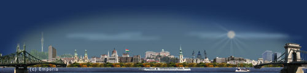
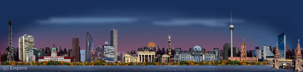

За това пътуване
Автомобил: 3860 km
Кораб: 4 km
Общa Статистика
Самолет: 29415 km
Автомобил: 26819 km
Влак: 3972 km
Кораб: 928 km
Общо: 61134 km
Градове: 52
Държави: 20
Континенти: 2
Източна Европа
Това бе първото ми голямо пътуване. Може би точно то ме запали по пътешествията, кой знае. Годината е 1989, аз съм на дванайсет, точно бях завършил шести клас. Един ден баща ми се прибра и започна да брой и подрежда на малки купчинки някакви странни банкноти. Попитах го какви са тези пари, а той ми каза „Тръгваме на екскурзия до Германия“. Казвам „Мен ще ме вземете ли?“, а той „Да“. Невероятно! Целта беше да стигнем до Балтийско море, като по пътя минем през Румъния, Унгария, Чехословакия, ГДР и Полша. Ето маршрута по който пътувахме:

София - Балтийско море
Общо сме пропътували 3860 километра, със чисто новата ни Лада 2104 на снимката по-долу:

Лада 2104
Тръгнахме от София, късно през нощта за да можем да прекосим Дунав с първия ферибот на сутринта по трасето Видин – Калафат. На границата нямахме проблеми, но и нямаше за какво. Около нас колите бяха натоварени с контрабандна стока – предимно алкохол замаскиран като кола – коняк и лимонада – ракия. Запознахме се с хората от двете коли зад нас, които се занимаваха именно с контрабанден туризъм. Изкарваха „кола“ и „лимонада“, уж за из път, а вкарваха дефицитни стоки, като маратонки и малки машини от Германия. С тези нови приятели се уговорихме да прекосим Румъния за един ден заедно, имайки предвид икономическото положение там по това време, което бе провокирало силна престъпност. На ферибота беше интересно, това беше първото ми такова преживяване и доста ме впечатли как на платформата се качват големи ТИР камиони. Разстоянието е около два километра. Ето ферибота на снимката по долу:

Ферибота Видин - Калафат
Румъния ни посрещна с разбити пътища и бедни работници по нивите, които щом забелязваха чужд автомобил започваха усърдно да махат с молба да получат нещо като подарък. Стихнахме Тимишоара и продължихме към Арад, интересни бяха крайпътните камъни на всеки километър: бяло - червени с красиви черни надписи.

Румънски крайпътен камък
В Унгария влезнахме по светло и даже ни остана време да се разходим из пограничния град Сегед. Беше различно. Европейско, уредено, красиво, чисто... След разходката нашите приятели „туристи“ черпиха с „лимонада“ но аз не пих по обясними причини.
Будапеща

На сутринта потеглихме към Будапеща. Когато се озовах за първи път в красива европейска столица, сякаш попаднах в центъра на света. Изящните мостове над Дунав, метрото, прекрасните сгради, катедрали и площади ме пренесоха в друг свят. Разгледахме сградата на парламента, централните части на града, минахме по Верижния мост и се качихме на хълма на Гелер.
Прага
След Унгария се озовахме в бившата Чехословакия. През Братислава столицата на настояща Словакия и чешкия град Бърно стигнахме Прага. Прекрасен град, с още по изящни сгради, сякаш всяка от които имаше по няколко кулички. Минахме по карловия мост и се изкачихме на Храдчани. Най-много ме впечатли астрономичният часовник.
Берлин

Нямах търпение да стигнем до Берлин. Не заради забележителностите там, ами заради това, че се бяхме подготвили за сериозно пазаруване. Преди това все пак се поразходихме из града, повозихме се на S-bahn и U-bahn, качихме се на телевизионната кула и видяхме отдалече Брандембурската порта, поради близостта и с границата със западен Берлин. И хайде на пазар! Имаше от пиле мляко, за разлика от при нас, където нямаше почти нищо освен по един вид от най необходимите стоки. Купих си скейтборд и естествено електрическо влакче – запазена германска марка. За влакчето си взех най различни аксесоари – семафори, дървета, гари.
Източен Берлин по това време беше не толкова красив град но много уреден и с модерна транспорта система. Посетихме музеят Пергамон където се пренесох в античността попадайки пред олтара на Пергамон и Портата на Иштар – осмата порта на Вавилон.
Шчечин
Шчечин е красив пристанищен град разположен на голямо езеро свързано с Балтийско море. Красивите сгради с характерни покриви присъстват в стария център близо до пристанището. След разходката в центъра и малко пазаруване, през което баща ми си взе платно за сърфа, тръгнахме към къмпинг на брега на морето. Пристигнахме бързо,настанихме се и хайде на плаж, все пак беше месец юни. Но изненада водата беше толкова студена, че успях да си потопя само краката до глезените. E все пак е нещо.
Пътувайки по дългия път обратно към София, никои от нас не предполагаше, че още есента ще започнат събитията бележещи края на разделението на Европа на източна и западна. Събития, които изцяло промениха живота ни и ни дадоха на нас обитателите на така наречения Източен блок, правото свободно да пътуваме по целия свят.